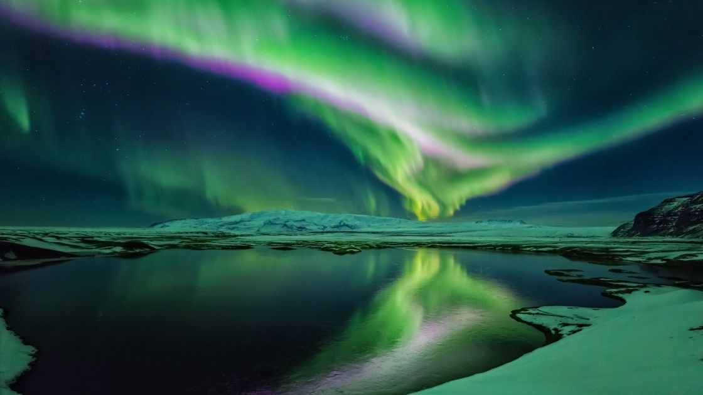

Finding Solitude in Iceland's Wilderness
Solo travel can be transformative. Read about my personal journey through Iceland's stunning landscapes and the reflections it inspired.
Traveling alone in Iceland offered me a unique opportunity to connect deeply with nature and myself. From the majestic waterfalls to the serene fjords, every moment spent in this breathtaking country felt like a step closer to inner peace and self-discovery.
In the solitude of Iceland's wilderness, I discovered not just the beauty of the land, but the depths of my own resilience and peace.
As I hiked through volcanic terrains and stood in awe under the Northern Lights, I found a new appreciation for solitude. The quiet moments allowed me to reflect on my life's journey, my aspirations, and my place in the world. The vast, untouched beauty of Iceland's landscapes served as a powerful reminder of the importance of preserving our natural world and finding harmony within it.
The experience of navigating a foreign land on my own also bolstered my confidence and resilience. Each challenge I faced, from deciphering maps to braving the unpredictable weather, became a testament to my ability to thrive independently. Solo travel in Iceland was not just about exploring a new destination; it was about embracing the adventure of self-discovery and personal growth.